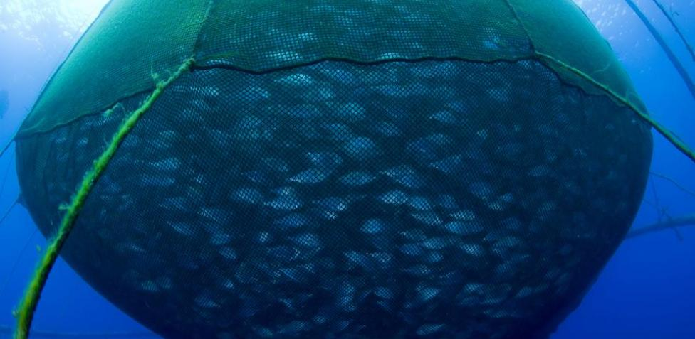
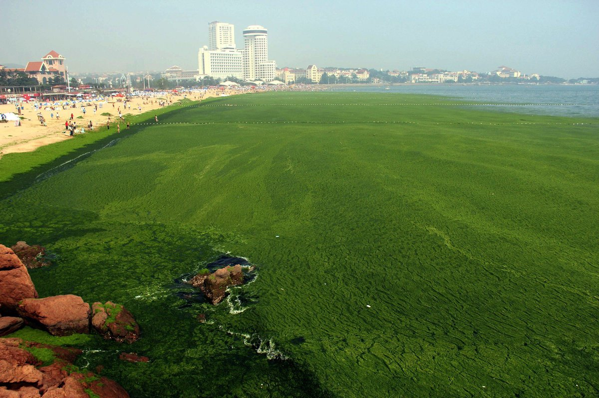
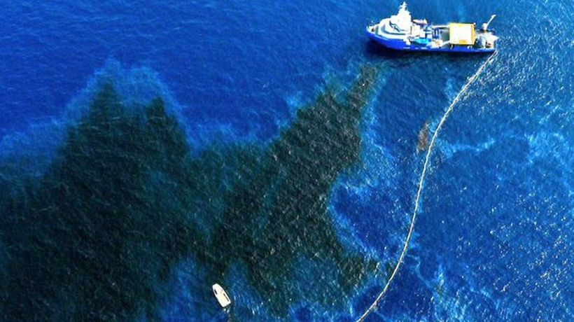
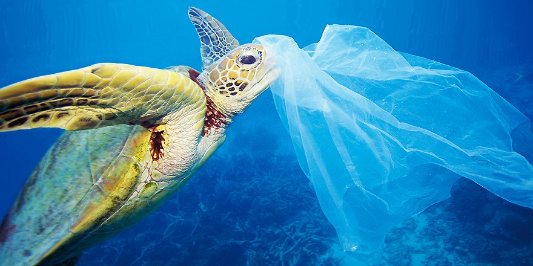

Las dos terceras partes de la superficie terrestre esta cubierta por océanos. Éstos albergan más de 210 mil formas conocidas de vida, son fuente primaria de alimento y recurso económico vital para millones de personas del mundo.
Las riquezas que proporcionan los océanos son limitadas y, dependiendo del uso responsable que hagamos de ellas, se asegurará o no, la perpetuidad de esos recursos para las futuras generaciones. Las principales problemáticas que involucran a los océanos son:
- Sobrepesca. Es uno de los problemas más inquietantes, que afecta a casi el 75% de las reservas pesqueras. Se capturan casi 130 millones de toneladas de pescado en todo el mundo. La pesca en exceso reduce una fuente vital de proteínas y las técnicas de arrastre destruyen los hábitats para la reproducción.
- Aumento de gases de efecto invernadero en la atmósfera. Esto se produce como consecuencia de la quema de combustibles fósiles, lo que provoca desde 1955 un aumento promedio de 0,06 grados centígrado en los océanos Pacífico, Atlántico e Índico. Esto trae aparejadas consecuencias en las poblaciones ictícolas, ecosistemas de arrecifes, manglares, así como en poblaciones humanas ubicadas en las zonas costeras.
- Contaminación por disposición de efluentes sin tratamiento. Químicos, fertilizantes, insecticidas, metales pesados, petróleo, plásticos convierten a las aguas de los océanos en grandes basureros.
- Exceso de fertilizantes y materia orgánica. Aporta un exceso de nutrientes en las aguas, lo que ocasiona una superoblación de algas y microorganismos. Cuando éstas mueren, son descompuestas por microorganismos que consumen una gran parte del oxígeno disuelto. El resultado final es un ecosistema pobre, en el que el agua deja de ser apta para la mayor parte de los seres vivos, y produce muchas veces la emanación de olores fuertes. Este proceso se conoce como eutrofización.
- Petróleo. Se calcula que 3.5 millones de toneladas al año se arrojan al mar, provenientes del proceso de carga y descarga, del agua de lastre contaminada con el hidrocarburo, bombeo de petróleo de desecho al mar, perforación de pozos, fugas de tuberías subacuaticas y accidentes.
- Plásticos y sintéticos. Cada día, gran cantidad de estos materiales se encuentran flotando en los mares del mundo, provenientes de ciudades costeras, desperdicios de buques, turismo en las playas. Como consecuencia, animales marinos (tortugas, peces, aves) mueren por ingesta o asfixia.





